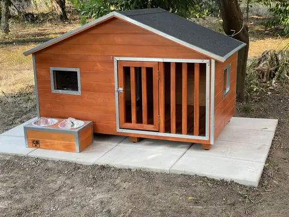
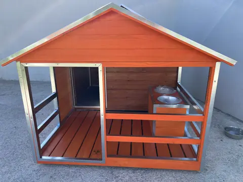
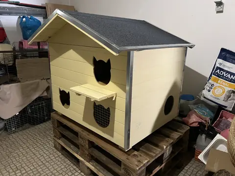
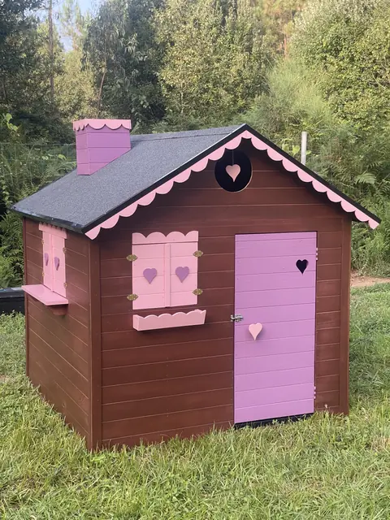
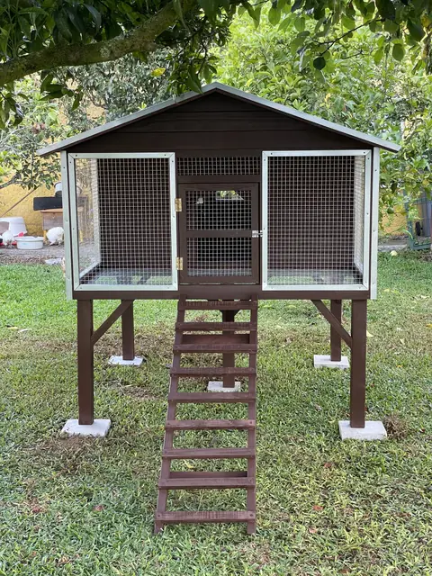
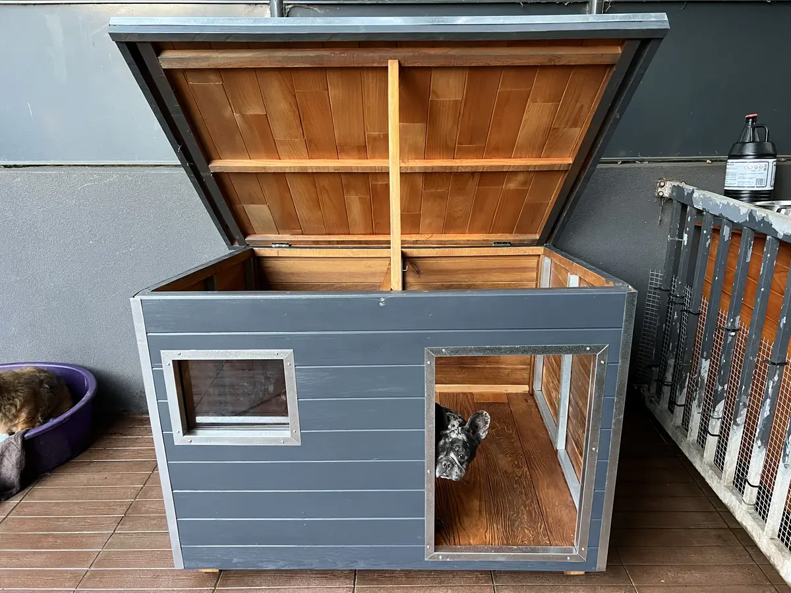

Casotas para cães
Individuais, duplas ou triplas, com janela, porta de grade e comedouros a condizer.
Feito à mão em Sandim · Vila Nova de Gaia
Abrigos personalizados em 100% madeira, com tratamento não tóxico, telhado que abre para limpar e o nome do seu animal na fachada. Desmontáveis, para cães, gatos e não só. E se a sua casota já tem uns anos, também a reparamos.
Próximas entregas: fevereiro de 2027O que fazemos
Cada peça é desenhada para o tamanho, o número de animais e o espaço onde vai ficar.

Individuais, duplas ou triplas, com janela, porta de grade e comedouros a condizer.

Modelos com alpendre, varandim ou até terraço no telhado, para quem gosta de apanhar sol.

Casotas de interior e exterior, abrigos para gatos de rua e modelos com dois pisos.

Casinhas de madeira para crianças, com janelas, portadas e as cores que escolherem.

Estruturas elevadas com rede, escada e telhado, feitas para o seu quintal.
Incluído de série: kit de caleiras exterior e janela com vidro amovível. Todas as casotas são desmontáveis.

Reparações
Reparamos casotas com muitos anos de uso. Estas casotas, por exemplo, tinham mais de 5 anos quando voltaram à nossa oficina.
Como as casotas são desmontáveis, é mais fácil trazê-las e levá-las de volta.
Galeria
Algumas das casotas que já fizemos. Toque numa foto para ver em grande.
Vídeos
Abrir o telhado, espreitar o interior, ver os acabamentos.
Como funciona
Agenda de encomendas
Cada casota é feita à mão e por medida, por isso trabalhamos por ordem de encomenda.
Disponível Poucas vagas Agenda cheia
Sobre nós
A Casotas Balgaves é uma empresa de Sandim, Vila Nova de Gaia, especializada em abrigos de madeira para animais. Há mais de uma década que fazemos casotas por medida, pensadas ao pormenor: estrutura em pinho nórdico, enchimento em pinho marítimo francês e tratamento da madeira não tóxico, por dentro e por fora.
Somos uma marca registada portuguesa e uma empresa de empreendedoras. Cada casota sai da nossa oficina com o cuidado de quem também tem patudos em casa.
Avaliações
O que dizem os clientes (16 avaliações).
“Atendimento excelente, sempre muito simpáticos os donos, a casota tem um ótimo acabamento e foi pensada nos mínimos detalhes.”
Cliente no Google
“Casotas maravilhosas, nada a reclamar! Meu cão amou a nova casota dele. Pintura impecável, personalizada, acabamento de primeira.”
Cliente no Google
“Casotas espetaculares, feitas ao seu gosto e medida do seu animal de companhia.”
Cliente no Google
Perguntas frequentes
Sim. Todas as casotas são feitas à medida do animal e do espaço onde vão ficar: tamanho, número de divisões, cores, alpendre e placa com o nome.
Estrutura em pinho nórdico e enchimento em pinho marítimo francês, 100% madeira, com tratamento interior e exterior não tóxico.
O preço depende do tamanho, do modelo e dos opcionais. Envie-nos o porte do seu animal pelo WhatsApp e fazemos um orçamento sem compromisso.
Sim. Há um kit de aquecimento opcional com lâmpada protegida, termóstato e comando, ideal para o inverno ou para animais mais velhos.
Sim. Fazemos casas para gatos (incluindo abrigos para gatos de rua), galinheiros, coelheiras e casinhas de brincar para crianças.
Sim. Reparamos casotas com muitos anos de uso: pintura, troca de telhado, troca de madeiras (incluindo as de sustentação) e todo o tipo de reparação. Envie-nos fotos pelo WhatsApp para um orçamento.
Sim. Todas as nossas casotas são desmontáveis, o que facilita o transporte, a entrega e uma futura mudança de casa.
A oficina fica na Rua Nossa Senhora de Fátima 308, em Sandim, Vila Nova de Gaia (distrito do Porto). Estamos abertos de segunda a sábado, das 9h às 17h.
Contacto
Envie-nos uma mensagem com o porte do animal e onde vai ficar a casota. Respondemos com um orçamento por medida.